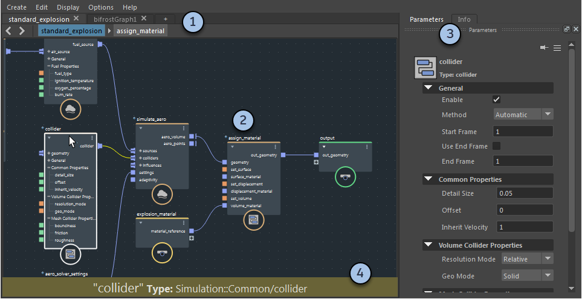

Bifrost 曲线图编辑器可用于查看、构建和修改图表。

一个场景中的多个图表显示在单独的选项卡中。
在主区域中双击复合以进入复合时，“当前位置导航栏轨迹”会显示您进入的节点。您可以单击节点名称以返回，或使用左侧的箭头。
尽管可以进入引用的复合以查看它们，但除非导入这些复合以使其可编辑，否则无法进行任何更改。
图表将显示在主编辑区域中。数据沿着节点上端口之间的连接从左到右流动，数据在这些节点上被修改。
若要导航图表，请执行以下操作：
若要选择节点，请执行以下操作：
右键单击节点、端口、连接或背景以访问其他选项。
按 L 可自动排列选定节点或整个图表（如果未选择任何对象）。
参数编辑器显示选定节点的输入。如果端口不是由连接驱动的，则可以在此处输入值。
在参数编辑器顶部的图标旁边，有两个字符串：节点的名称和类型。节点的默认名称基于其类型，但是可以通过双击图表中的名称对其进行更改。
单击“信息”(Info)，以显示有关选定节点及其端口的信息。
您可以撕下这些选项卡以使其浮动，或者将其停靠在 Bifrost 曲线图编辑器中的其他位置。
信息栏将弹出，以显示有关指针下的节点、端口或连接的信息。它可帮助诊断图表中的问题。